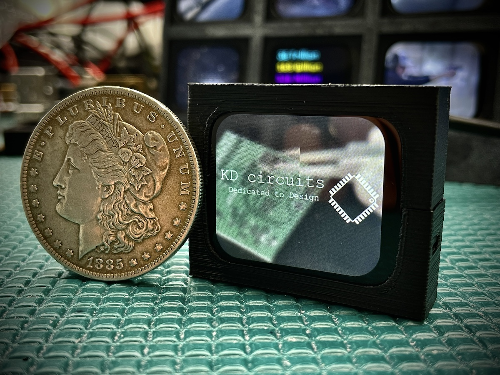

Video Player Project
This is the code that the board ships with!
But how to load your own files?
They need to be a specific format “.mjpeg” - I use ffmpeg for this. Here is the full command:
ffmpeg -i "inputPath" -vf "fps=18,scale=-1:240:flags=lanczos,crop=280:240:(iw-280)/2:0,transpose=1" -q:v 4 -vcodec mjpeg -f segment -segment_time 1800 -reset_timestamps 1 "outputPattern"
But the good news is that I created a simple app for Windows/Mac to do this automatically. Just place all of your .mp4 files in a folder, run the app and it will take care of the rest. Copy those .mjpeg files to your SD card.
You can download the video converter tool for Windows/Mac from the following link:

Source Code & .bin file GitHub